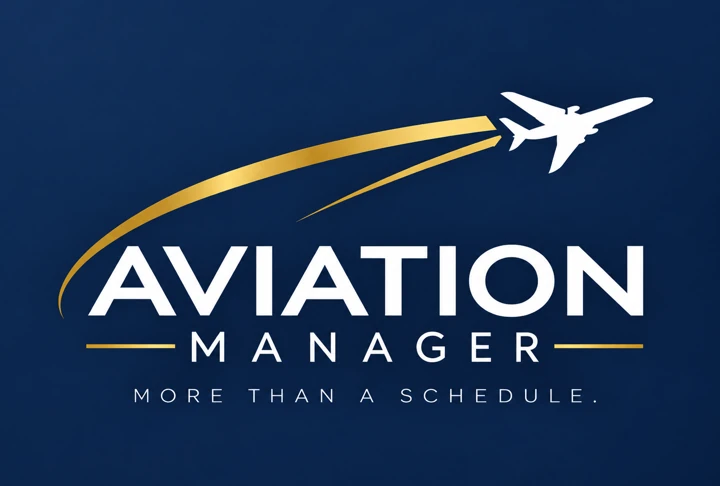
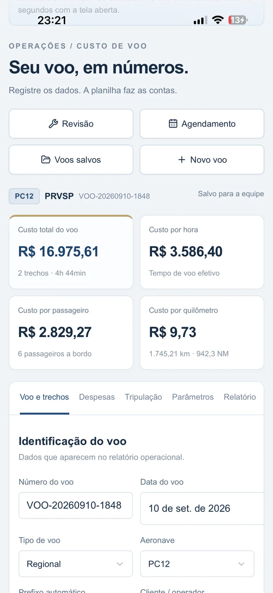

▣
Organização
Informações críticas da operação em um único ambiente, com menos planilhas e menos dispersão.
Centralize voos, agenda, notificações, custos, revisões e informações operacionais em uma plataforma criada para a rotina da aviação executiva.



Informações críticas da operação em um único ambiente, com menos planilhas e menos dispersão.
Reduza tarefas repetitivas com fluxos de agenda, calendário e notificações conectados.
Acompanhe custos, relatórios e dados operacionais com leitura clara e objetiva.
Google Calendar, e-mail e WhatsApp trabalhando junto do agendamento.
Do planejamento do voo ao acompanhamento de revisão e custos, cada módulo foi pensado para reduzir trabalho manual sem perder controle.
Data, horários, rota e seleção da aeronave em um fluxo simples.
Ver detalhes →Acesso rápido aos voos registrados e às informações operacionais.
Explorar →Custos do voo, despesas operacionais, tripulação e consolidação anual.
Ver custos →Resumo operacional, PDF, Excel preenchido e indicadores consolidados.
Ver relatórios →Mapas, orçamento, documentos e auditoria do processo de revisão.
Ver revisões →Acompanhamento técnico por componentes, motores e vencimentos.
Ver manutenção →Calendar, e-mail e WhatsApp no mesmo fluxo operacional.
Ver integrações →Uma nova etapa da plataforma está sendo preparada.
Em breve →Selecione a aeronave, registre rota, data e horário. O Aviation Manager mantém o fluxo conectado às notificações e ao Google Calendar.
Uma sequência operacional pensada para reduzir tarefas repetidas e manter as informações alinhadas.
Organize baseline, fechamento, mapas e documentos de revisão. Compare informações, identifique discrepâncias e mantenha um histórico mais claro do processo.
Integrações do dia a dia reunidas ao fluxo de agendamento.
Conheça uma plataforma desenvolvida em torno da rotina real da aviação executiva.